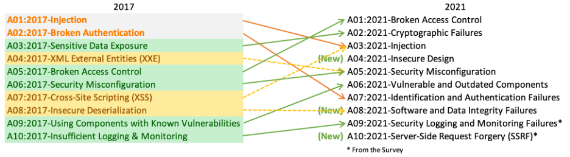

Giriş
OWASP Top 10 - 2021’e Hoş Geldiniz

OWASP Top 10’un en güncel sürümüne hoş geldiniz! OWASP Top 10 2021 tamamen yenilendi; yeni bir grafik tasarım ve ana sayfamızdan indirebileceğiniz ya da çıktısını alabileceğiniz tek sayfalık bir infografik ile geliyor.
Bu sürüme zamanını ve verisini katan herkese kocaman teşekkürler. Siz olmadan bu sürüm mümkün olmazdı. TEŞEKKÜRLER!
2021 Top 10’da neler değişti
Bu sürümde üç yeni kategori, isimlendirme ve kapsam değişiklikleri olan dört kategori ve bazı konsolidasyonlar var. Gerekli olduğunda isimleri, semptom yerine kök nedene odaklanacak şekilde değiştirdik.

- A01:2021-Broken Access Control beşinci sıradan, en ciddi web uygulaması güvenlik riski kategorisine yükseliyor; katkı sağlanan veriler ortalama olarak test edilen uygulamaların %3,81’inde bu risk kategorisindeki Common Weakness Enumeration (CWE)lerden bir ya da daha fazlasının bulunduğunu ve bu risk kategorisinde 318 binden fazla CWE olayı olduğunu gösteriyor. Broken Access Control ile eşlenen 34 CWE, diğer tüm kategorilerden daha fazla sayıda uygulamada görülmüş durumda.
- A02:2021-Cryptographic Failures bir sıra yükselerek #2’ye çıkıyor; önceki adı A3:2017-Sensitive Data Exposure idi; bu daha çok bir semptomdu, kök neden değil. Yenilenen ad, daha önce de örtük olarak olduğu gibi kriptografiyle ilgili başarısızlıklara odaklanıyor. Bu kategori sıklıkla hassas veri ifşasına veya sistemin ele geçirilmesine yol açar.
- A03:2021-Injection üçüncü sıraya geriliyor. Uygulamaların %94’ünde bir tür injection için test yapıldı; maksimum insidans oranı %19, ortalama insidans oranı %3,37 ve bu kategoriye eşlenen 33 CWE, uygulamalarda 274 bin olay ile ikinci en yüksek görünüme sahip. Cross-site Scripting bu sürümde artık bu kategorinin bir parçası.
- A04:2021-Insecure Design 2021 için yeni bir kategori; tasarım kusurlarıyla ilişkili risklere odaklanır. Endüstri olarak gerçekten “sola kaymak” istiyorsak daha fazla threat modeling, güvenli tasarım pattern’leri ve prensipleri ile referans mimarilere ihtiyaç var. Güvensiz bir tasarım, ne kadar kusursuz uygulanırsa uygulansın düzeltilemez; tanım gereği, belirli saldırılara karşı gerekli güvenlik kontrolleri hiç oluşturulmamıştır.
- A05:2021-Security Misconfiguration önceki sürümde #6’dan yükseliyor; uygulamaların %90’ı bir tür yanlış yapılandırma için test edildi, ortalama insidans oranı %4,5 ve bu risk kategorisine eşlenen 208 binden fazla CWE olayı var. Yüksek derecede konfigüre edilebilir yazılımlara geçiş arttıkça bu kategorinin yükselmesi şaşırtıcı değil. Önceki A4:2017-XML External Entities (XXE) kategorisi artık bu risk kategorisinin bir parçası.
- A06:2021-Vulnerable and Outdated Components önceki adı Using Components with Known Vulnerabilities idi ve Top 10 community survey’de #2 oldu; ayrıca veri analizine göre de Top 10’a girecek kadar veri vardı. Bu kategori 2017’deki #9’dan yükseliyor ve test etmekte ve riski değerlendirmekte zorlandığımız bilinen bir konu. Dahil edilen CWE’lere eşlenen herhangi bir CVE’nin bulunmadığı tek kategori; bu nedenle skorlamaya varsayılan exploit ve impact ağırlıkları 5.0 olarak dahil edildi.
- A07:2021-Identification and Authentication Failures önceki Broken Authentication kategorisidir; ikinci sıradan geriliyor ve artık kimlik tespitiyle (identification) daha ilişkili CWE’leri de içeriyor. Bu kategori hâlâ Top 10’un ayrılmaz bir parçası, ancak standart framework’lerin artan kullanılabilirliği yardımcı oluyor gibi görünüyor.
- A08:2021-Software and Data Integrity Failures 2021 için yeni bir kategoridir; doğrulama yapılmadan software update’ler, kritik data ve CI/CD pipeline’larıyla ilgili varsayımlara odaklanır. Bu kategoriye eşlenen 10 CWE’den CVE/CVSS verilerinde en yüksek ağırlıklı impact’lerden bazıları geliyor. A8:2017-Insecure Deserialization artık bu daha geniş kategorinin bir parçası.
- A09:2021-Security Logging and Monitoring Failures önceki A10:2017-Insufficient Logging & Monitoring kategorisidir; Top 10 community survey (#3) ile eklendi ve önceki #10’dan yükseliyor. Bu kategori daha fazla failure türünü içerecek şekilde genişletildi, test edilmesi zorlu ve CVE/CVSS verilerinde iyi temsil edilmiyor. Ancak bu kategorideki başarısızlıklar doğrudan görünürlüğü, incident alerting’i ve adli analizleri etkileyebilir.
- A10:2021-Server-Side Request Forgery Top 10 community survey (#1) ile eklendi. Veriler, ortalamanın üzerinde test kapsamıyla birlikte nispeten düşük bir insidans oranı ve Exploit ile Impact potansiyeli için ortalamanın üzerinde puanlar gösteriyor. Bu kategori, güvenlik topluluğu üyelerinin bunun önemli olduğunu söylediği, ancak şu an için verilerde tam yansımayan bir senaryoyu temsil ediyor.
Metodoloji
Bu sürüm her zamankinden daha veri odaklı, ancak körü körüne veri odaklı değil. On kategorinin sekizini katkı verilerinden, ikisini de yüksek seviyede Top 10 community survey’den seçtik. Bunu temel bir nedenle yapıyoruz: katkı verilerine bakmak geçmişe bakmaktır. AppSec araştırmacılarının yeni zafiyetler ve onları test etmenin yeni yollarını bulması zaman alır. Bu testlerin araçlara ve süreçlere entegre edilmesi de zaman alır. Bir zayıflığı ölçekli şekilde güvenilir biçimde test edebildiğimiz zamana kadar yıllar geçmiş olabilir. Bu bakışı dengelemek için, application security ve development uzmanlarına, verilerin henüz göstermeyebileceği ama sahada gördükleri temel zayıflıkların neler olduğunu sormak üzere bir community survey kullanıyoruz.
Top 10’u olgunlaştırmaya devam etmek için benimsediğimiz birkaç kritik değişiklik var.
Kategoriler nasıl yapılandırıldı
OWASP Top Ten’in önceki sürümüne göre bazı kategoriler değişti. İşte değişikliklerin yüksek seviyeli özeti.
Önceki veri toplama çabaları, yaklaşık 30 CWE’nin belirlenmiş bir alt kümesine odaklanıyordu ve ek bulgular için bir alan vardı. Organizasyonların çoğunlukla yalnızca bu 30 CWE’ye odaklandığını ve gördükleri ek CWE’leri nadiren eklediklerini öğrendik. Bu sürümde konuyu serbest bıraktık ve herhangi bir kısıtlama olmaksızın yalnızca veri istedik. 2017’den başlayarak belirli bir yıl için test edilen uygulama sayısını ve testlerde en az bir CWE örneği bulunan uygulama sayısını istedik. Bu format, her bir CWE’nin uygulama popülasyonu içinde ne kadar yaygın olduğunu izlememizi sağlıyor. Bizim amaçlarımız için frekansı görmezden geliyoruz; başka durumlarda önemli olabilse de uygulama popülasyonundaki gerçek yaygınlığı gizliyor. Bir uygulamada bir CWE’nin dört örneği ya da 4.000 örneği olması Top 10 hesaplamasına dahil değil. Yaklaşık 30 CWE’den veri setinde analiz etmek üzere neredeyse 400 CWE’ye geçtik. Gelecekte ek veri analizi yapmayı planlıyoruz. CWE sayısındaki bu önemli artış, kategorilerin nasıl yapılandırıldığına ilişkin değişiklikleri gerektiriyor.
CWE’leri gruplamak ve kategorize etmek için birkaç ay harcadık ve birkaç ay daha devam edebilirdik. Bir noktada durmak zorundaydık. CWE’lerin hem kök neden hem de semptom tipleri vardır; kök neden tiplerine “Cryptographic Failure” ve “Misconfiguration” örnek verilebilirken, semptom tiplerine “Sensitive Data Exposure” ve “Denial of Service” örnek verilebilir. Mümkün olduğunda kök nedene odaklanmaya karar verdik; çünkü tanımlama ve iyileştirme rehberi sağlamak açısından daha mantıklı. Kök nedene semptomdan daha fazla odaklanmak yeni bir konsept değil; Top Ten zaten semptom ve kök neden karışımıydı. CWE’ler de bir karışımdır; biz sadece bunu daha kasıtlı hale getiriyor ve vurguluyoruz. Bu sürümde kategori başına ortalama 19,6 CWE var; alt sınırlar A10:2021-Server-Side Request Forgery (SSRF) için 1 CWE ve A04:2021-Insecure Design için 40 CWE. Bu güncellenmiş kategori yapısı, şirketlerin dillerine/framework’lerine uygun CWE’lere odaklanabilmesi açısından ek eğitim faydaları sunuyor.
Kategorilerin seçimi için veriler nasıl kullanıldı
2017’de kategorileri olasılığı belirlemek için insidans oranına göre seçtik, ardından onlarca yıllık deneyime dayanan ekip tartışmalarıyla Exploitability, Detectability (aynı zamanda likelihood) ve Technical Impact temelinde sıraladık. 2021 için mümkünse Exploitability ve (Technical) Impact için veri kullanmak istiyoruz.
OWASP Dependency Check’i indirdik ve CVE’lere eşlenen CWE’lere göre gruplanmış CVSS Exploit ve Impact skorlarını çıkardık. Oldukça fazla araştırma ve çaba gerektirdi; tüm CVE’lerin CVSSv2 skorları var, ancak CVSSv2’deki kusurların CVSSv3 ile ele alınması gerekiyordu. Belirli bir noktadan sonra tüm CVE’lere ayrıca bir CVSSv3 skoru da atandı. Ek olarak, puan aralıkları ve formüller CVSSv2 ile CVSSv3 arasında güncellendi.
CVSSv2’de hem Exploit hem (Technical) Impact 10,0’a kadar çıkabiliyordu, ancak formül Exploit için %60’a, Impact için %40’a düşürüyordu. CVSSv3’te teorik maksimum Exploit için 6,0 ve Impact için 4,0 ile sınırlandırıldı. Ağırlıklar dikkate alındığında, CVSSv3’te Impact skoru ortalama olarak neredeyse bir buçuk puan yukarı kaydı ve exploitability ortalama olarak neredeyse yarım puan aşağı kaydı.
National Vulnerability Database (NVD) verilerinde CWE’ye eşlenen bir CVE’nin 125 bin kaydı var ve bir CVE’ye eşlenen 241 benzersiz CWE bulunuyor. 62 bin CWE eşlemesi bir CVSSv3 skoruna sahip; bu, veri seti popülasyonunun yaklaşık yarısıdır.
Top Ten 2021 için ortalama exploit ve impact skorlarını şu şekilde hesapladık. Tüm CVSS skorlarına sahip CVE’leri CWE’ye göre grupladık ve hem exploit hem impact skorlarını, popülasyonun CVSSv3 sahibi yüzdesine + kalan CVSSv2 popülasyonuna göre ağırlıklandırarak genel bir ortalama elde ettik. Bu ortalamaları, risk denkleminin diğer yarısı için Exploit ve (Technical) Impact puanlaması olarak kullanmak üzere veri setindeki CWE’lere eşledik.
Neden saf istatistiksel veri değil?
Verilerdeki sonuçlar, esasen otomatik olarak test edebildiklerimizle sınırlıdır. Deneyimli bir AppSec profesyoneli ile konuşursanız, verilerde henüz bulunmayan ama buldukları şeylerden ve gördükleri trendlerden bahsederler. Belirli zafiyet türleri için test metodolojilerinin geliştirilmesi zaman alır ve bu testlerin otomatikleştirilip çok sayıda uygulamaya karşı çalıştırılması daha da zaman alır. Bulduğumuz her şey geçmişe bakmaktadır ve verilerde olmayan son yılın trendlerini kaçırıyor olabilir.
Bu nedenle veriler eksik olduğu için on kategoriden yalnızca sekizini verilerden seçiyoruz. Diğer iki kategori Top 10 community survey’den geliyor. Bu, sahada çalışan uygulayıcıların, verilerde olmayabilecek (ve belki de hiç veriye yansımayacak) en yüksek riskleri oylamasına olanak tanır.
Neden frekans yerine insidans oranı?
Üç birincil veri kaynağı vardır: Human-assisted Tooling (HaT), Tool-assisted Human (TaH) ve ham Tooling.
Tooling ve HaT, yüksek frekanslı bulgu üreticileridir. Araçlar belirli zafiyetleri arar, yorulmadan bu zafiyetin her örneğini bulmaya çalışır ve bazı zafiyet türleri için yüksek bulgu sayıları üretir. Cross-Site Scripting’e bakın; genellikle iki çeşittir: daha küçük, izole bir hata ya da sistemik bir sorun. Sistemik olduğunda tek bir uygulama için bulgu sayıları binlere ulaşabilir. Bu yüksek frekans, raporlardaki ya da verilerdeki diğer çoğu zafiyeti bastırır.
Öte yandan TaH, daha geniş bir zafiyet türü yelpazesi bulur ancak zaman kısıtları nedeniyle çok daha düşük frekanstadır. İnsanlar bir uygulamayı test edip Cross-Site Scripting gibi bir şey gördüğünde genellikle üç dört örnek bulur ve durur. Sistemik bir bulgu olup olmadığını belirleyebilir ve uygulama genelinde düzeltme önerisi ile yazabilirler. Her örneği bulmaya gerek (ve zaman) yoktur.
Bu iki farklı veri setini frekansa göre birleştirmeye çalıştığımızı varsayalım; Tooling ve HaT verileri daha doğru (ama geniş) TaH verilerini boğar ve bunun önemli bir kısmı, Cross-Site Scripting gibi şeylerin çoğu listede çok yüksek sıralarda olmasının nedenidir; genellikle etkisi düşük ile orta arasında olmasına rağmen. Bunun nedeni salt bulgu hacmidir. (Cross-Site Scripting’i test etmek de nispeten kolaydır, bu nedenle onun için daha fazla test vardır.)
2017’de, verilere taze bir bakış atmak ve Tooling ile HaT verilerini TaH verileriyle temiz şekilde birleştirmek için insidans oranını kullanmaya başladık. İnsidans oranı, uygulama popülasyonunun yüzde kaçında bir zafiyet türünün en az bir örneğinin bulunduğunu sorar. Tekil mi yoksa sistemik mi olduğuna aldırmayız. Bizim amaçlarımız için bu ilgisizdir; sadece en az bir örnek bulunan uygulama sayısını bilmeye ihtiyacımız var; bu da, yüksek frekanslı sonuçlarla verileri boğmadan, farklı test türleri arasında bulguların daha net bir görünümünü sağlar. Bu, bir saldırganın bir kategoriyi başarıyla istismar etmek için yalnızca bir örneğe ihtiyaç duyduğu gerçeğiyle ilişkili risk temelli bir bakışa karşılık gelir.
Veri toplama ve analiz süreciniz nedir?
Veri toplama sürecini 2017’de Open Security Summit’te resmileştirdik. OWASP Top 10 liderleri ve topluluk, şeffaf bir veri toplama süreci oluşturmak için iki gün harcadı. 2021 sürümü, bu metodolojiyi ikinci kez kullandığımız sürümdür.
Sosyal medya kanalları üzerinden (hem proje hem OWASP) veri çağrısı yayınlıyoruz. OWASP Proje sayfasında aradığımız veri öğelerini ve yapılarını ve bunların nasıl gönderileceğini listeliyoruz. GitHub projesinde şablon görevi gören örnek dosyalarımız var. CWE’lere yapı ve eşlemeyi anlamak için gerektiğinde organizasyonlarla birlikte çalışıyoruz.
Verileri, işi gereği test vendor’ı olan organizasyonlardan, bug bounty vendor’larından ve iç test verilerini katkılayan organizasyonlardan alıyoruz. Veriyi aldıktan sonra bir araya yüklüyor ve CWE’lerin risk kategorilerine nasıl eşlendiğine dair temel bir analiz çalıştırıyoruz. Bazı CWE’ler arasında örtüşme var ve diğerleri birbirine çok yakındır (örn. kriptografik zafiyetler). Gönderilen ham verilerle ilgili alınan her karar, verileri nasıl normalize ettiğimizi açık ve şeffaf olmak için belgelenir ve yayımlanır.
Top 10’a dahil edilmek üzere en yüksek insidans oranına sahip sekiz kategoriye bakıyoruz. Ayrıca Top 10 community survey sonuçlarına bakıyor ve hangilerinin verilerde zaten mevcut olabileceğini görüyoruz. Verilerde henüz yer almayan en çok oyu alan iki kategori, Top 10’daki diğer iki yer için seçilir. Tüm on kategori seçildikten sonra, Top 10 2021’i risk bazlı bir sıraya koymaya yardımcı olmak için genelleştirilmiş exploitability ve impact faktörlerini uyguladık.
Veri Faktörleri
Top 10’daki her kategori için listelenen veri faktörleri ve anlamları şunlardır:
- CWEs Mapped: Top 10 ekibi tarafından bir kategoriye eşlenen CWE sayısı.
- Incidence Rate: Belirli bir yıl için, o organizasyon tarafından test edilen popülasyondaki uygulamaların, ilgili CWE’ye karşı zafiyetli olan yüzdesi.
- (Testing) Coverage: Belirli bir CWE için tüm organizasyonlar tarafından test edilen uygulamaların yüzdesi.
- Weighted Exploit: CWE’lere eşlenen CVE’lerden gelen CVSSv2 ve CVSSv3 Exploit alt-skoru, normalize edilerek 10 puanlık ölçeğe yerleştirilmiş hali.
- Weighted Impact: CWE’lere eşlenen CVE’lerden gelen CVSSv2 ve CVSSv3 Impact alt-skoru, normalize edilerek 10 puanlık ölçeğe yerleştirilmiş hali.
- Total Occurrences: Bir kategoriye eşlenen CWE’lerin bulunduğu uygulamaların toplam sayısı.
- Total CVEs: Bir kategoriye eşlenen CWE’lere NVD veritabanında eşlenen toplam CVE sayısı.
Veri katkıcılarımıza teşekkürler
Aşağıdaki organizasyonlar (ve bazı anonim bağışçılar), bu sürümü en büyük ve en kapsamlı uygulama güvenliği veri seti hâline getiren 500.000’den fazla uygulamaya ait verileri cömertçe bağışladı. Siz olmadan bu mümkün olmazdı.
- AppSec Labs
- Cobalt.io
- Contrast Security
- GitLab
- HackerOne
- HCL Technologies
- Micro Focus
- PenTest-Tools
- Probely
- Sqreen
- Veracode
- WhiteHat (NTT)
Sponsorlarımıza teşekkürler
OWASP Top 10 2021 ekibi, Secure Code Warrior ve Just Eat’in finansal desteğini minnetle kabul eder.